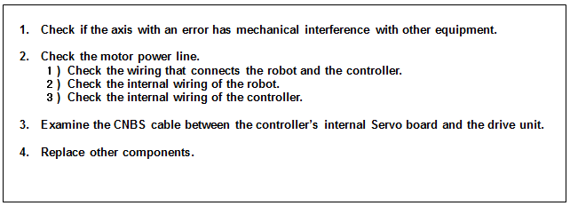
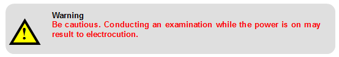
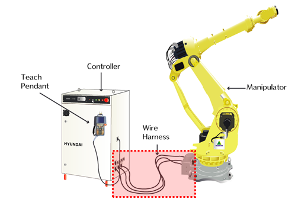
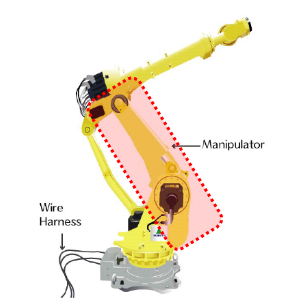
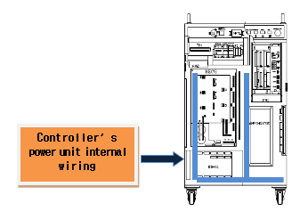
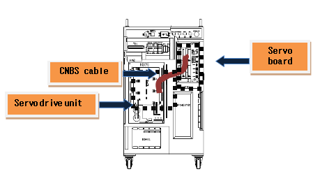
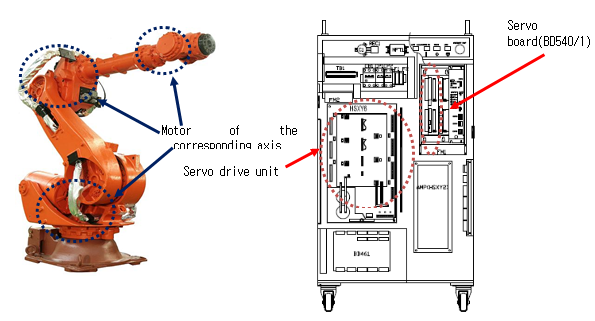

1.1.17.1. Outline
The current that flows in the motor or the drive unit exceeds the allowed voltage range. When the current that was generated by the Servo control to operate the robot (or the drive unit) exceeds the allowed safe voltage range, the Servo board will detect an error and immobilize the robot.
1.1.17.2. Causes and checking methods

1. Check if the axis with an error has mechanical interference with other equipment.
This error may occur if the robot had a mechanical interference or collisions. If the robot is out of the operation area, please move it back into the operation area by using a manual control.
2. Check the motor power line.
Please turn off the primary power and remove the U, V, and W of the drive unit for the corresponding axis, and examine if short-circuit exists in each phase. Please use equipment, such as a multimeter (tester), and examine each phase's wiring one by one.

1) Check the wiring that connects the robot and the controller.
Please remove the wirings that connect the controller, robot, or drive unit to examine each phase (U, V, W) for ground or a short-circuit. If a short-circuit is found, please replace the wire.

Figure 5.52 Basic installation diagram between the robot and the controller
2) Check the robot's internal wiring
Examination for a short-circuit, faulty wiring that is connected to the robot's internal motor is required.

Figure 5.53 Robot's internal wiring
3) Check the controller's internal wiring
An examination on the controller's internal AMP and installed wiring is required.

Figure 5.54 Controller internal side (power section)
3. Examine the CNBS cable between the controller's internal Servo board (DSP board) and the drive unit.
Please examine if the CNBS cable is installed properly. If the cable is not installed properly or is faulty, this error may occur.

Figure 5.55 Controller internal side (CNBS cable)
4. Replace other components.
Replace the component of the Servo board (BD540/1) → Servo drive unit → Motor to confirm the occurrence of an error.
